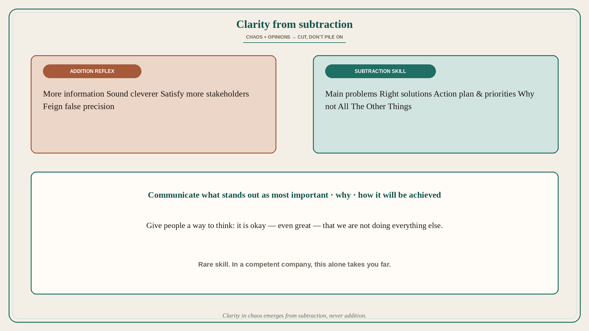

Clarity in chaos comes from subtraction, never addition
Source: Shreyas Doshi (@shreyas)
original post
What it claims
The ability to create clarity when there is no shortage of chaos, opinions, and competing priorities is a rare skill — and in a reasonably competent company it alone can take you far, fairly quickly. Concretely: clarity on the main problems, on the right solutions, and on the action plan and priorities. Very few people do this well even though most have the intelligence — because workplace conditioning pushes adding more information, sounding cleverer, satisfying more stakeholders, and feigning more precision and certainty than is possible. Clarity in chaos emerges from subtraction, never addition. It means communicating what stands out as most important, why, how it will be achieved, and — last but not least — giving people a way of thinking about why it is okay, even great, that you are not doing All The Other Things.
Why it matters for a PO
PI planning decks that grow every week are addition-as-clarity. The rare PO skill is cutting to main problems, chosen solutions, and priorities — plus an explicit story for what you will not do so the room can stop lobbying every pet idea. Subtraction is the product strategy.
3 takeaways
- Clarity on problems, solutions, and priorities is a rare, career-accelerating skill.
- Workplace conditioning pushes addition (more info, cleverness, stakeholders, false precision); clarity needs subtraction.
- Say what matters, why, how — and why it is okay that All The Other Things wait.
Practice this week
Take one overloaded page or deck. Cut it to: top problem, chosen approach, three priorities, and a short “not doing” list with reasons. Present that. Do not add another appendix to “make it clearer.”